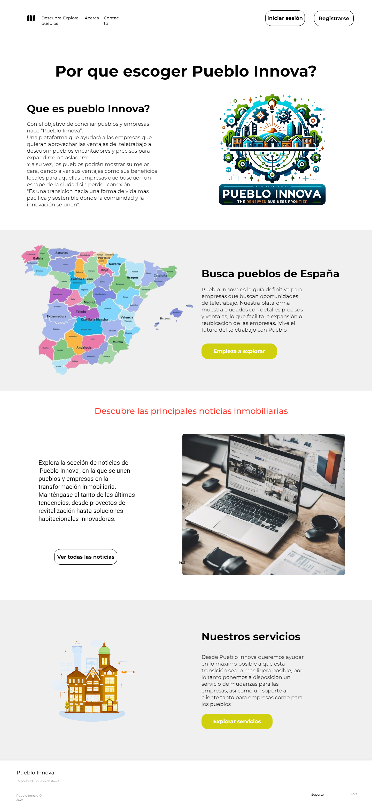
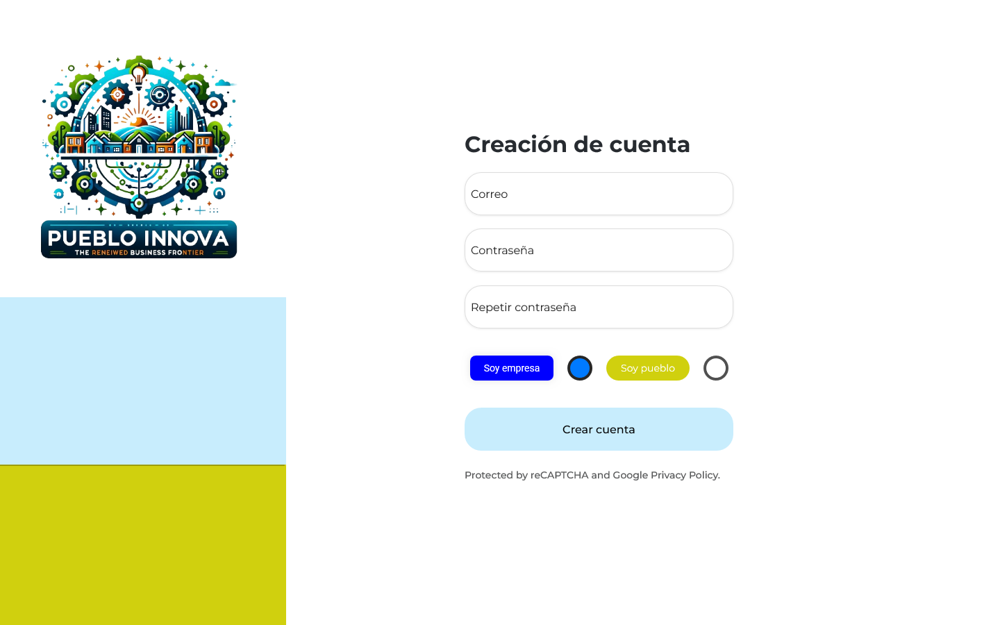
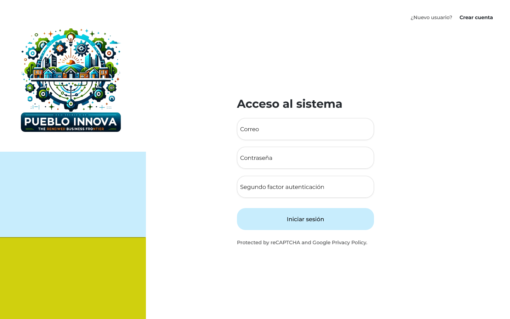
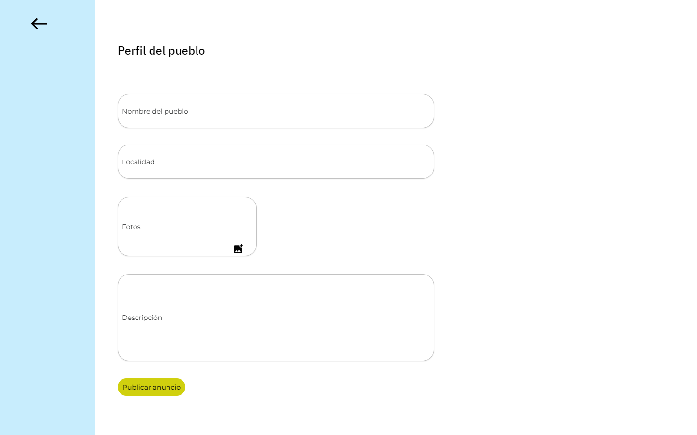
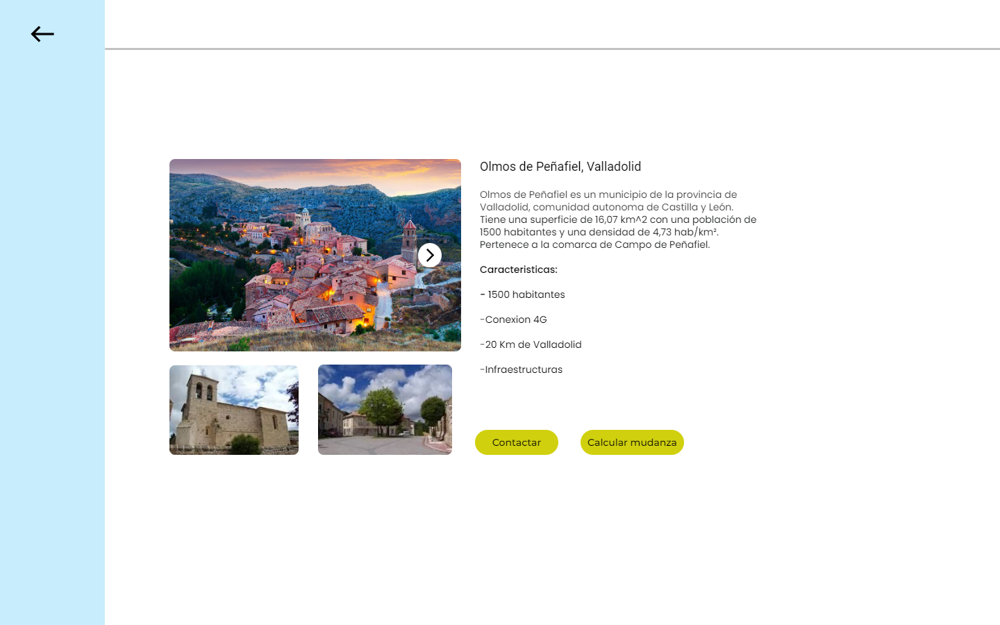
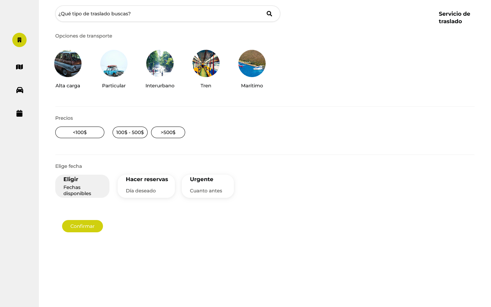
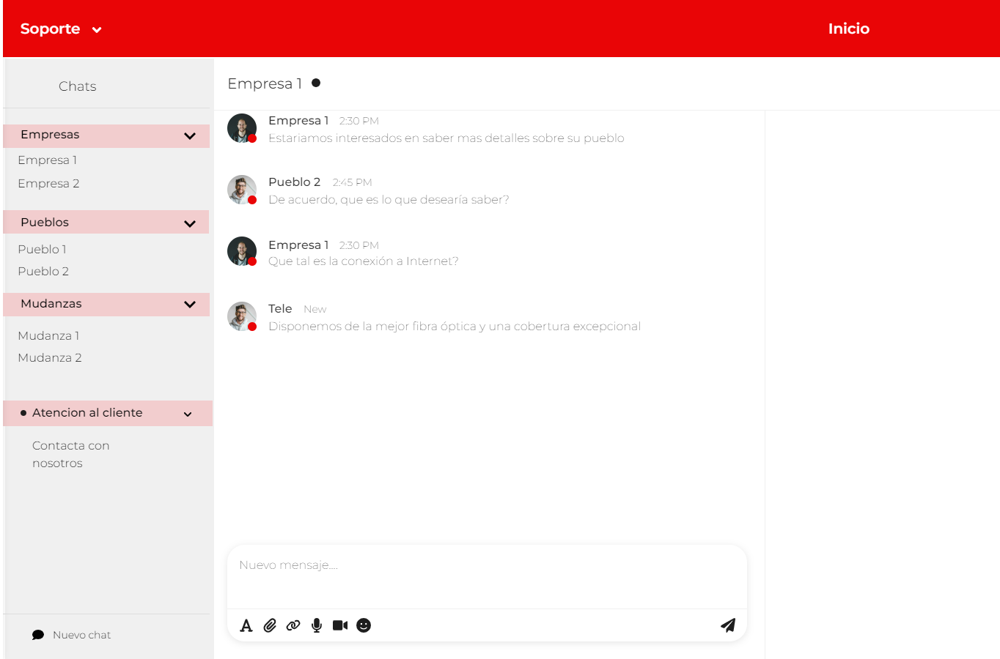
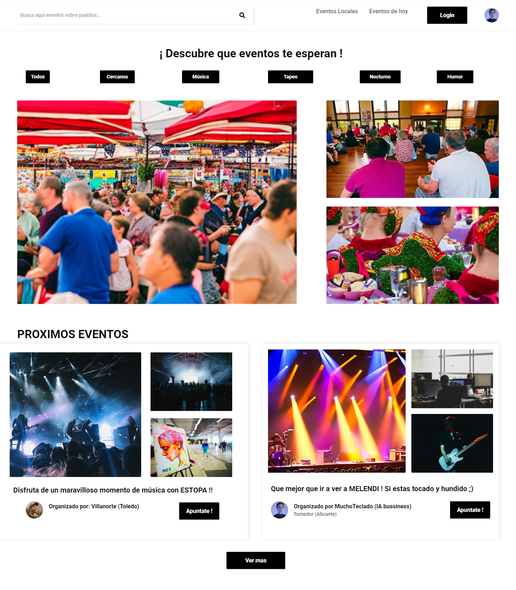

Se muestra la pantalla de inicio sobre una posible interfaz que tendrá nuestra web, en la que aparecen todos los servicios mas importantes que hay.

Se muestra la pantalla sobre una interfaz estandar de crear una cuenta en una web.

Una vez creada la cuenta y verificada por los administradores, estos usuarios tendrán la opción de poder iniciar sesión y poder interactuar con la web.

Una vista sobre los posibles datos que se solicitaran a los pueblos y empresas que quieran formar parte del proyecto.
Aunque el boceto sea sobre la gestión de un pueblo, el perfil de gestión de una empresa será similar.

Datos relevantes sobre los pueblos y empresas que se hayan registrado y por tanto accesible para el resto de usuarios.

Servicio habilitado para las empresas que podran utilizar en caso de que quieran trasladar sus pertenencias al pueblo.

Servicio de chat integrado dentro de la web para que pueden comunicarse pueblos y empresas siempre y cuando esten registrados.

Tablón que mostrará los diferentes eventos previsto en un periodo de tiempo determinado.
